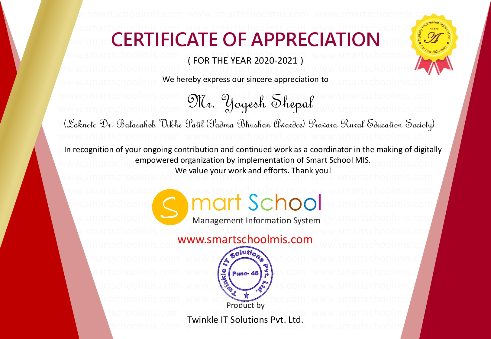
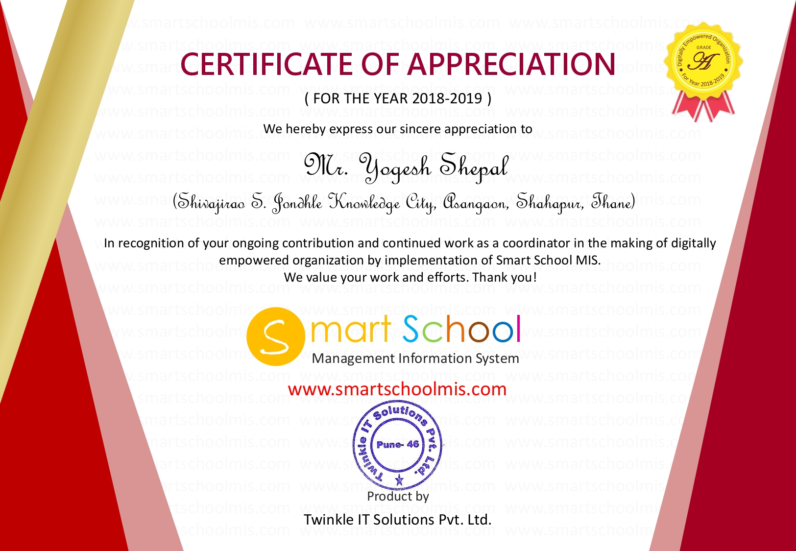
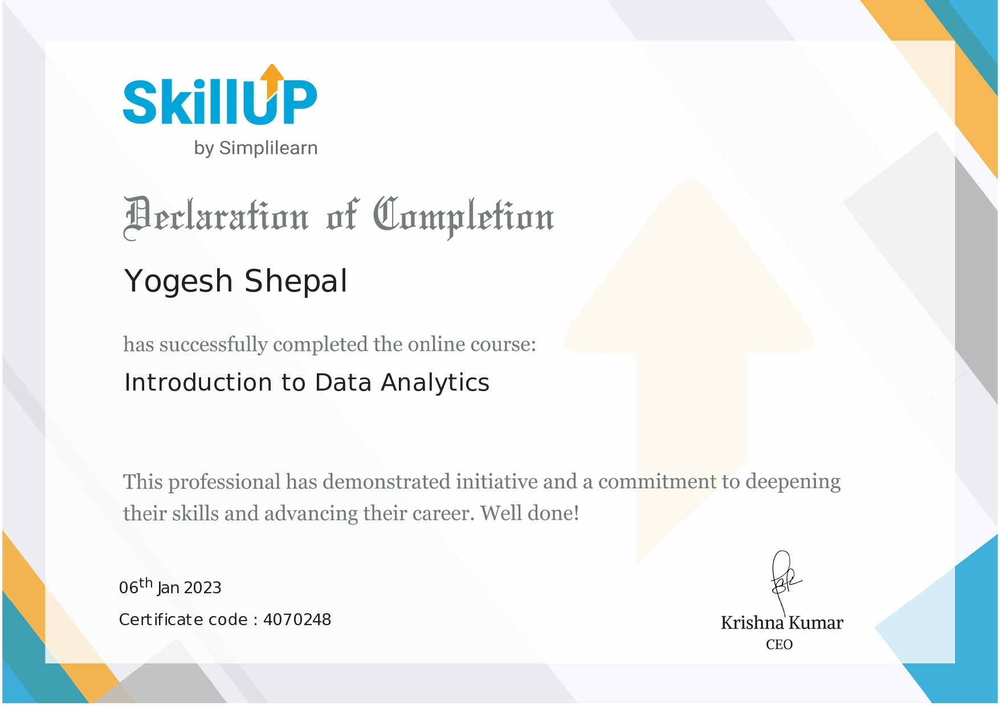
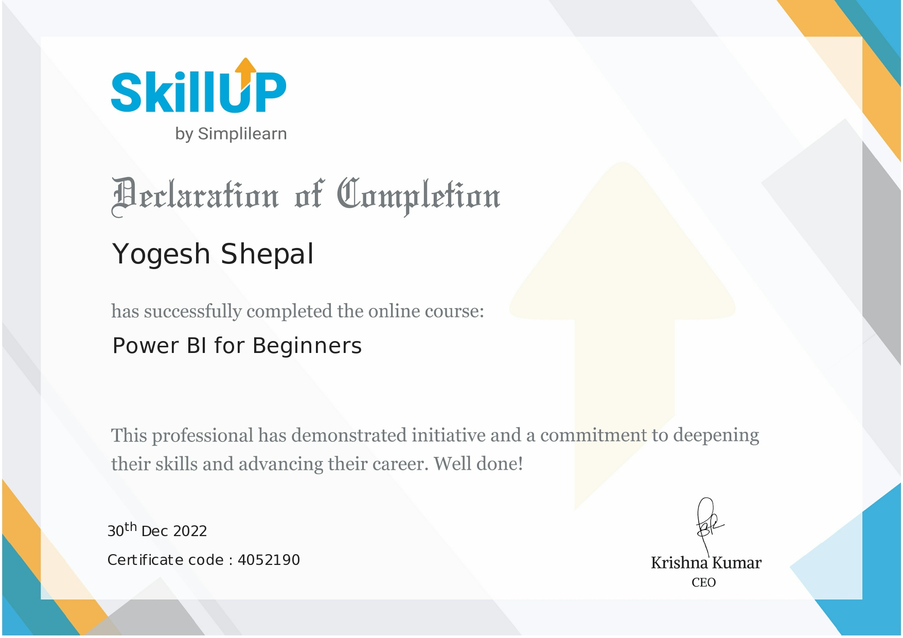
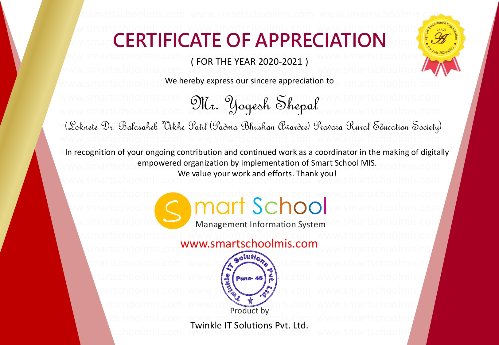
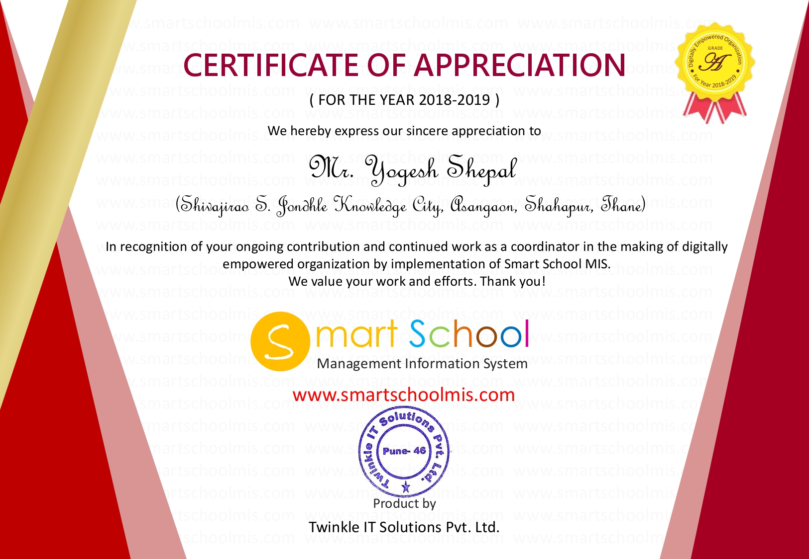
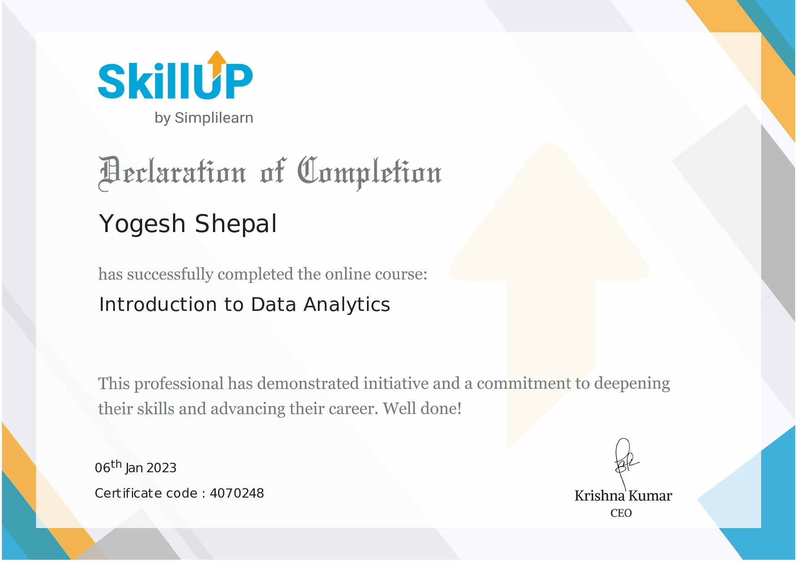
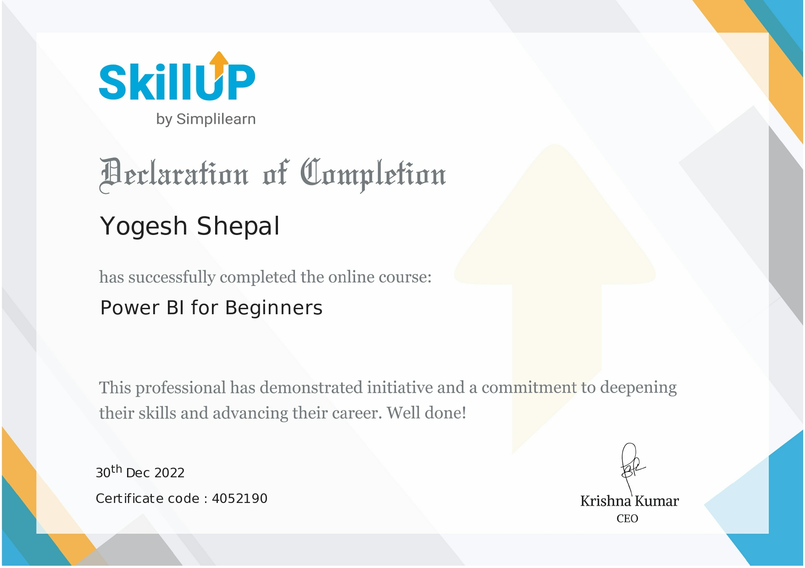

Deep Learning for Cervical Cancer Detection using Pap Smear Images
Panamerican Mathematical Journal
Advanced deep learning techniques for automated cervical cancer screening using convolutional neural networks.
📊 Citations: 12📈 Impact Factor: 2.1
2024
Machine Learning Approaches for Diabetes Risk Prediction
Frontiers in Health Informatics
Comprehensive analysis of ML algorithms for early diabetes detection using clinical parameters.
📊 Citations: 8📈 Impact Factor: 1.8
2024
Enhanced Word Sense Disambiguation using Context-Aware Neural Networks
Copyrighted Research Work
Novel approach to natural language processing using transformer-based architectures for semantic understanding.
🔬 Status: Under Review
2024
Autonomous Drone Navigation Console
Patent Application
Innovative control system for autonomous drone navigation with real-time obstacle avoidance capabilities.
📋 Patent ID: IN202410...⚖️ Status: Filed
📝 Blog / Articles
Aug 2025
Mastering C Programming: A Comprehensive Guide for Engineering Students
C programming remains the cornerstone of computer science education. This guide explores fundamental concepts, best practices, and practical applications that every engineering student should master.
Why C Programming Matters
C programming language, developed by Dennis Ritchie in 1972, continues to be relevant in modern software development. Its efficiency, portability, and close-to-hardware nature make it essential for system programming, embedded systems, and performance-critical applications.
Core Concepts Every Student Must Know
1. Memory Management: Understanding pointers, dynamic allocation, and memory leaks prevention is crucial. Always pair malloc() with free() to avoid memory leaks.
2. Data Structures: Arrays, linked lists, stacks, and queues form the foundation. Practice implementing these from scratch to understand memory layout and pointer manipulation.
3. Function Design: Write modular, reusable functions. Follow single responsibility principle - each function should perform one specific task.
Best Practices for Clean Code
Use meaningful variable names (studentCount instead of sc)
Comment complex algorithms and business logic
Validate input parameters in functions
Handle error conditions gracefully
Use const keyword for read-only parameters
Conclusion: C programming builds strong foundational skills that translate to other languages. Practice regularly, write clean code, and always prioritize readability and maintainability.
Aug 2025
Deep Learning Fundamentals: From Neural Networks to Real-World Applications
Deep learning has revolutionized artificial intelligence. This comprehensive guide covers neural network fundamentals, key architectures, and practical implementation strategies for beginners and intermediate learners.
Understanding Neural Networks
Neural networks are computational models inspired by biological neural systems. They consist of interconnected nodes (neurons) organized in layers that process information through weighted connections and activation functions.
Core Components Explained
1. Neurons and Layers: Input layer receives data, hidden layers process information, and output layer produces results. Each neuron applies weights, adds bias, and uses activation functions.
2. Activation Functions: ReLU (Rectified Linear Unit) is most common for hidden layers due to computational efficiency. Sigmoid and Tanh are used for specific scenarios. Softmax is ideal for multi-class classification output.
Future Outlook: Deep learning continues evolving with attention mechanisms, self-supervised learning, and neural architecture search. Stay updated with latest research and practical applications in your domain.
Aug 2025
AI/Machine Learning Tutorial: Building Your First Intelligent System
Step-by-step guide to understanding and implementing machine learning algorithms. Learn practical AI development from data preprocessing to model deployment.
Introduction to Machine Learning
Machine Learning is a subset of artificial intelligence that enables computers to learn and make decisions from data without explicit programming. This tutorial covers essential concepts and practical implementation strategies.
Types of Machine Learning
Supervised Learning: Uses labeled data to train models. Examples include classification (email spam detection) and regression (price prediction).
Unsupervised Learning: Finds patterns in unlabeled data. Clustering customers by behavior or dimensionality reduction for data visualization.
Reinforcement Learning: Learns through interaction with environment. Used in game playing, robotics, and autonomous systems.
Next Steps: Practice with real datasets from Kaggle, experiment with different algorithms, and build end-to-end projects to solidify your understanding.
Aug 2025
Software Development Best Practices: Writing Maintainable and Scalable Code
Essential practices for professional software development. Learn coding standards, design patterns, testing strategies, and collaboration techniques used in industry.
Clean Code Principles
Clean code is readable, maintainable, and self-documenting. It reduces technical debt and improves team productivity.
Naming Conventions
Meaningful Names: Use descriptive variable and function names. Prefer 'calculateTotalPrice()' over 'calc()' or 'process()'.
Consistency: Follow established naming patterns throughout the project. Use camelCase or snake_case consistently.
Function Design Best Practices
Single Responsibility: Each function should do one thing well. Keep functions under 20-30 lines when possible.
Continuous Improvement: Regularly refactor code, update dependencies, and adopt new best practices. Software development is an evolving field requiring continuous learning.
Teaching
I have taught at multiple institutes including ASM NEXTGEN, PCET NMIET, Sinhgad Institute, PRES and D.Y. Patil College.
My areas include C, Java, and AI.


 






